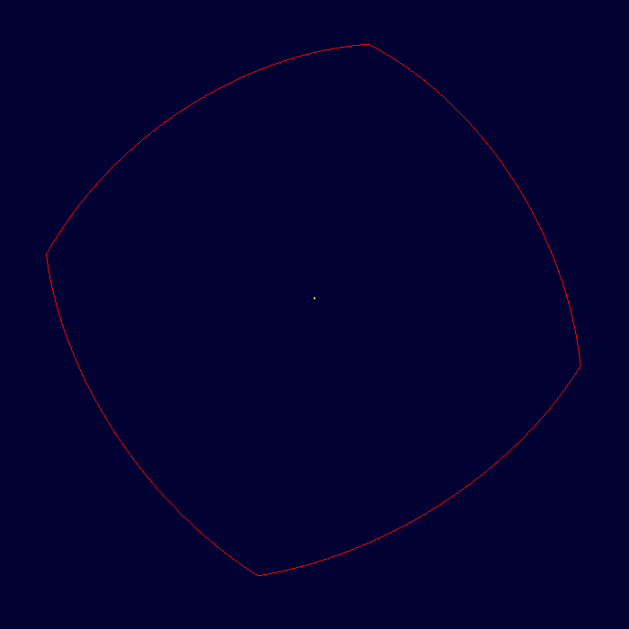
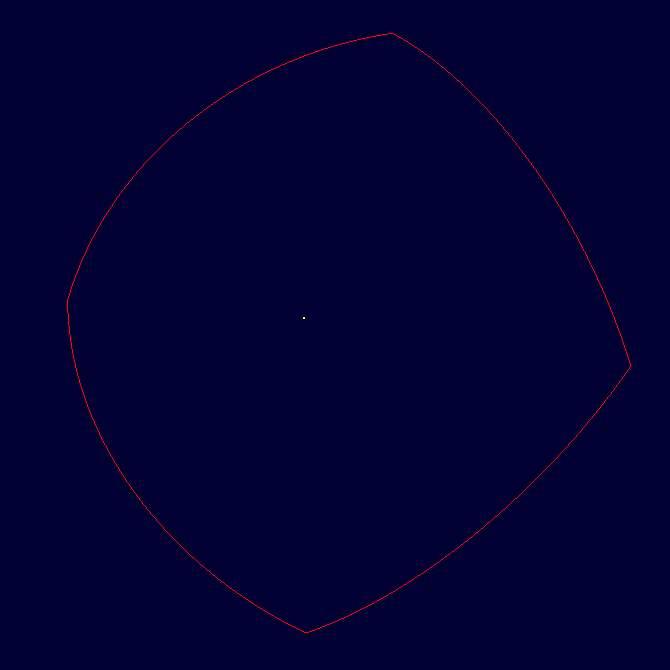
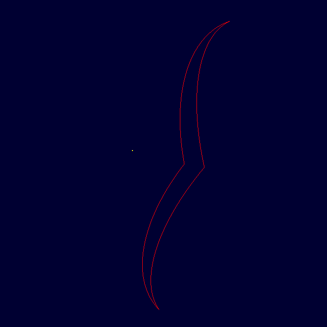
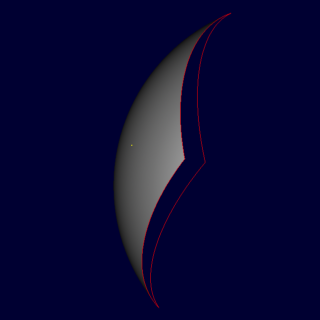

| Front view | Back view | Side view | |
|---|---|---|---|
| Original Model |  |  |  |
| Ray-tracing Result |  |
PROBLEM: I generate a single NURBS surface and import it to MGED, then trace the model in three different views. The results confuse me a lot. Why only the model posed in side view can get a satisfactory result, but not front view?, and we even get nothing in front view?
Firstly, we need to understand what is NURBS, here is a brief overview of NURBS geometry from a mathematical and technical perspective. It would be much easier if we are familiar with these basic concepts related to NURBS.
The purpose of this demo is to assign thickness value to brep primitive and generate plate mode NURBS, so what I think is to create a *new* tool named as "brep_surf" because it will generate only one single face. Of course, we need to use some command arguments to control the thickness value or even we do not want the thickness in order to form a regular brep. For example, the regular brep can be generated by using "brep_surf", and plate mode brep can be made by "brep_surf -H 2" where "-H 2" means assigning thickness to brep with its value equaling to 2mm.
Since we can directly integrate the thickness value into brep primitives by using openNURBS built-in application specified variable(like m_brep_user or m_face_user etc.), and it is operable for both whole brep primitive and each face. But in my implementation, currently I only consider a global thickness which is designed to assign value to brep but not each face. Because I want to start from an easy job and refine it gradually later.
This is all my thought, and here is the link to my code. Any comments are welcome. :)
In BRL-CAD, there are already sereval examples aiming at creating brep primitvies, like "brep_cobb" and "brep_cube" etc., but comparing with "brep_surf", they are only tutorials about how to create brep manually but not paying attentions on plate mode or others. So I think "brep_surf" is necessary.
If you have different opinions, any suggestions are welcome, thanks.
Next, we need to consider how to export and import plate mode brep primitives. Cause in the original implementation of openNURBS, it does not support archiving user data(that data stored in m_brep_user or m_face_user etc.), so we should do it manually.
Let's start from exporting. What I do here is to store an extra flag for indicating whether this brep is in plate mode or not. If it is, then at the tail of real data block, we continue to write thickness value into the memory. Here is the link to my sample code.
Then, let's talk about importing. Why I need to store an extra flag for indication mentioned just now? Because we need to count how many bytes that is occupied by thickness value, so that we can count the real bytes used by real data block. Here is the link to my sample code.
We know that, for plate mode BoT, if we use 'l' command to show details about it, the infomation will include thickness value for each face. So similarly, for brep, we need to do this also. Actually, the information related to the output is controlled by rt_brep_describe, so what I do is to modify this function and get desired output information.
{kind=link}
{kind=link}
{kind=link}
{kind=link}
{kind=link}
{kind=link}